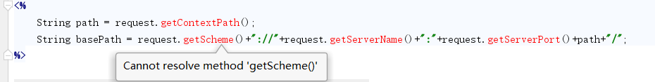
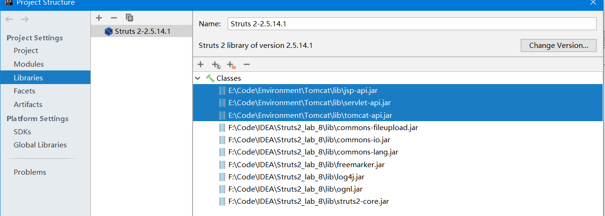
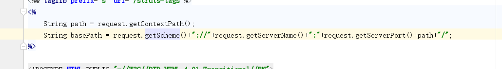

作为一个IDEA的不熟练使用者，我在使用IDEA编写struts2以及spring框架使用JSP调用JAVA时，遇到了IDEA的提示1
Cannot resolve method '***'

调用的这些全部来自于request库
在查询了相关问题之后，我确定了这次问题所在：
IDEA中使用预置的IDEA模板创建相关的WEB项目是不会自动在lib文件夹下导入TOMCAT以及相关servlet包
解决方法：IDEA->file->project Structure->Libraries
在此项中点击加号，将tomcat\lib 文件夹中的servlet-api.jar，jsp-api.jar,tomcat-api.jar三个包导入即可。

在导入包之后，IDEA显示正常。
